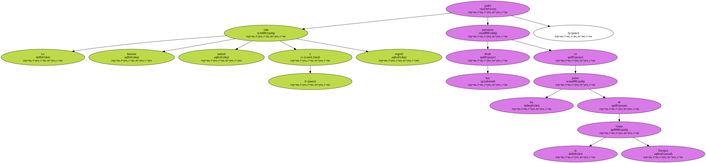
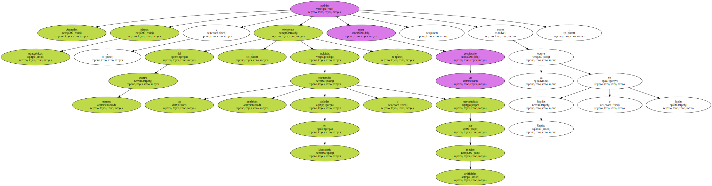
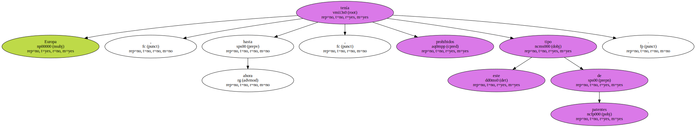
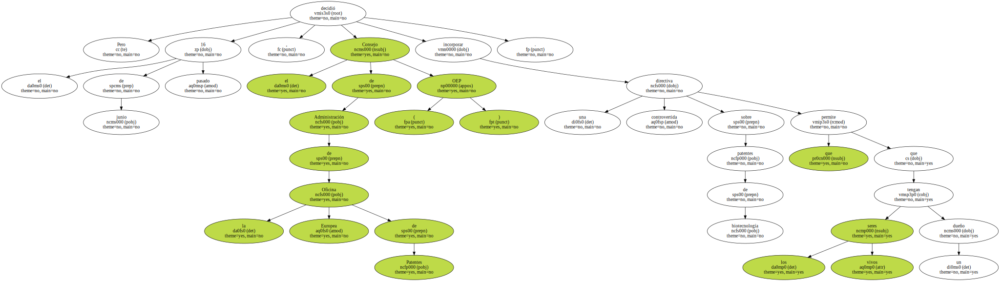
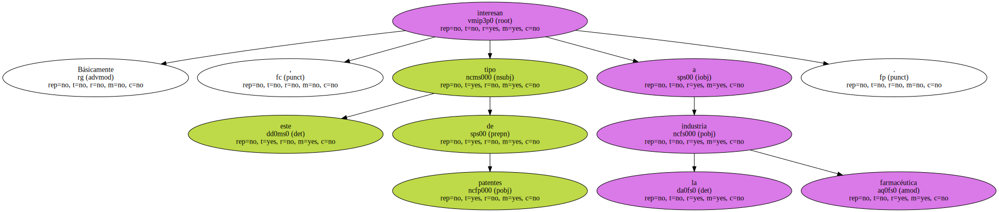
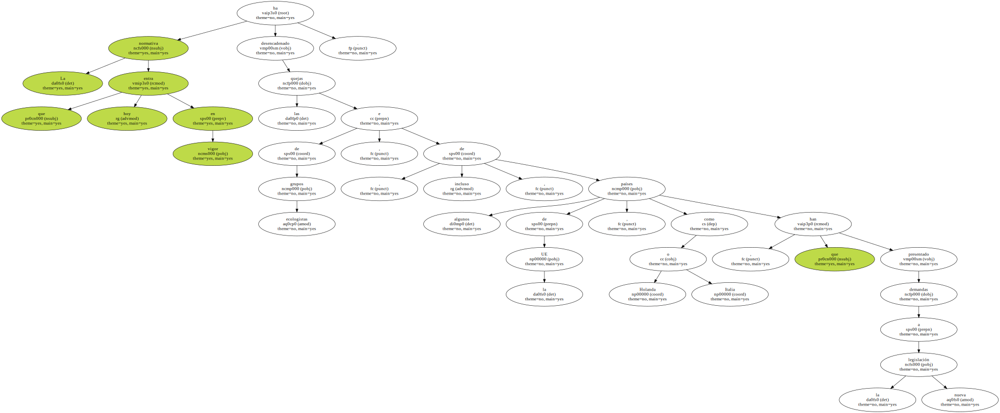
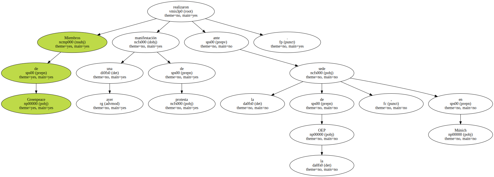
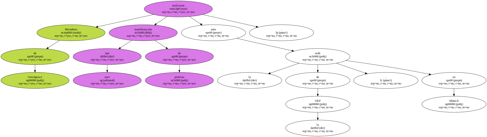

La vida humana , animal y vegetal podrá patentarse desde hoy en los países de la Unión Europea.
Animales , plantas transgénicas y elementos del cuerpo humano , incluidas las secuencias genéticas aisladas en laboratorio o reproducidas por medios artificiales , podrán tener un propietario , como ya ocurre en Estados Unidos y Japón.
Europa , hasta ahora , tenía prohibidos este tipo de patentes.
Pero el 16 de junio pasado , el Consejo de Administración de la Oficina Europea de Patentes ( OEP ) decidió incorporar una controvertida directiva sobre patentes de biotecnología que permite que los seres vivos tengan un dueño.
Básicamente , este tipo de patentes interesan a la industria farmacéutica.
Por ejemplo , se podrán patentar los genes o células que se utilizan en la producción de la insulina humana.

La normativa que hoy entra en vigor ha desencadenado las quejas de grupos ecologistas , e , incluso , de algunos países de la UE , como Holanda o Italia , que han presentado demandas a la nueva legislación.
La normativa que hoy entra en vigor ha desencadenado las quejas de grupos ecologistas , e , incluso , de algunos países de la UE , como Holanda o Italia , que han presentado demandas a la nueva legislación.
Miembros de Greenpeace realizaron ayer una manifestación de protesta ante la sede de la OEP , en Múnich.
